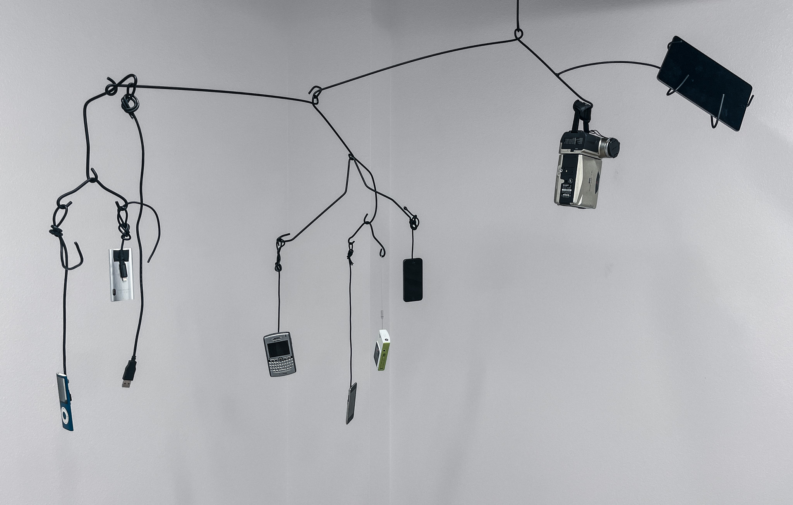
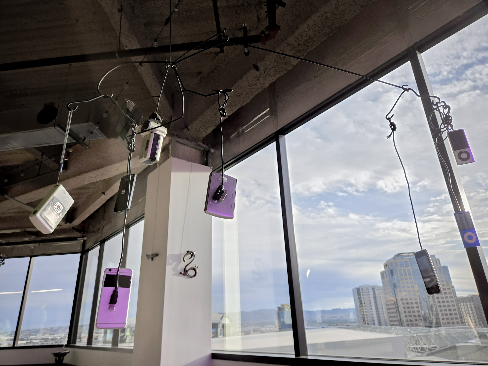
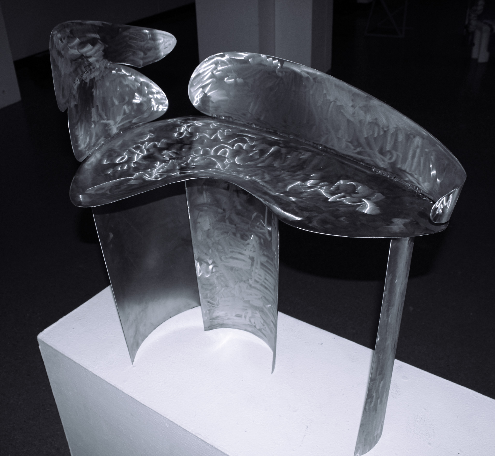
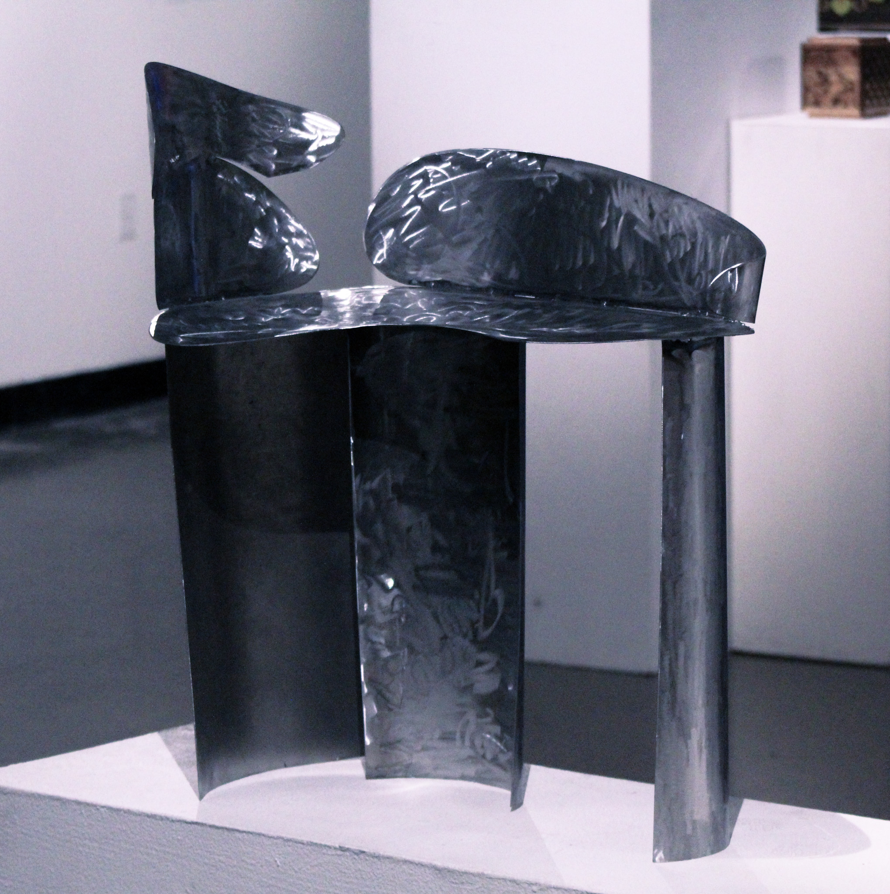
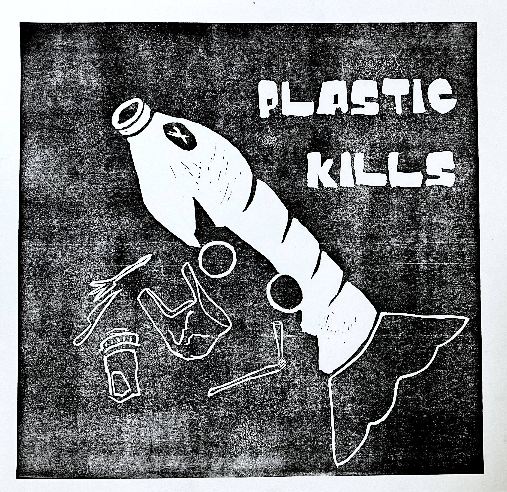
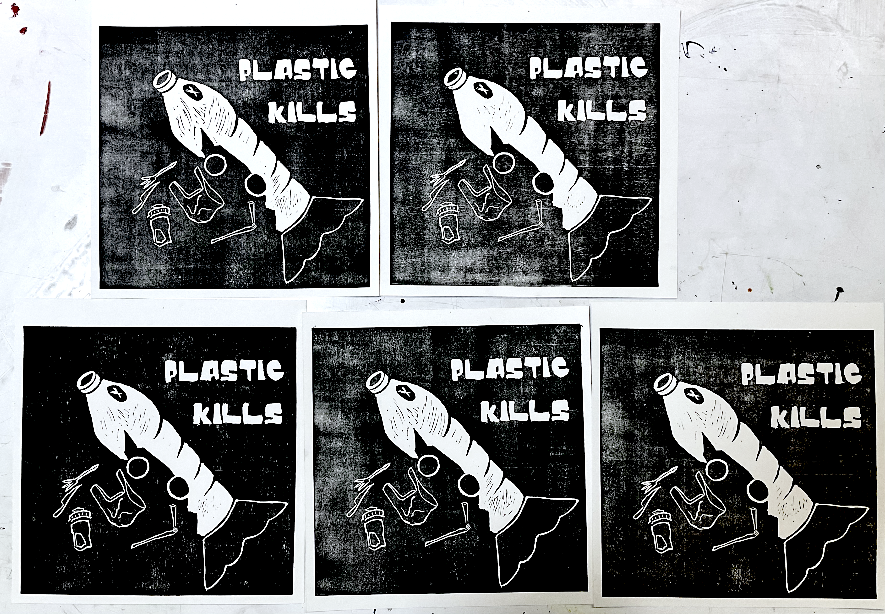

Portfolio
Multimedia Performance and Installation
Kinect Performance (2023)
- shadow puppet show, max/MSP, foley
- Video Link
Meet Doh! (2024)
- VTube Studio, Ableton Live 12, Pixera, NDI
- Interactive 'puppet' performance that utilized live facial capture of a comedian to host a gameshow and facilitate audience interactions
- Co-led this project with my collaborater Noami by writing scripts, programming the virtual puppet, and managing the Pixera timeline
- Worked with a group of students from an immersive sound class to achieve sound design and ambisonic sound implementation into EIS systems
- Video Link
D4D Scene 4 (2024)
- VR, Dreamscape Workflow, Unity, Blender, Reaper
- My role in this group was to coordinate and record voice lines, create the sound design, 3D model jade pottery pieces, assist in Unity timeline programming, and upload new builds using the Dreamscape SDK
- Mocap Studio Recording
- Timeline Playthrough
Electroacoustic Bass Composition (2025)
- Utilizes Max/MSP - FluCoMa
Vent Site-Responsive Installation (2025)
- pure data, bela
- Conducted site research by taking sound walks around campus and taking field recordings of industrial equipment
- Used granular synthesis to process these recordings
- ultrasonic distance sensor used to communicate with embedded pure data patch on bela board to cue granular processes
- Video Link
Interface Design and Development
Drone Gestural Instrument (2024)
- Mounted M5 Sensor to remote control drone.
- Routed gyroscopic and acceleration data from drone motion into Max/MSP for data analysis
- Sent data analysis results to VCV/Rack as synthesizer parameter controls
Amoeba Bridge (2025)
- Touch-reactive instrument
- Designed circuit utilizing CMOS ships and copper tape
- Video Link
Honeycomb Radio (2025)
- Media Arts and Sciences Capstone project
- Collaborative installation that included writing an electronic album and experimental fabrication
- Laser Cutting and woodworking, designing foam switches with FSRs, Arduino, Max/MSP
- Video Link
Sculpture and Fine Art Work


Phone Mobile (2025)
- Steel Rod, Electronic Devices


Moon Chair (2025)
- Sheet Steel


Plastic Kills (2024)
- linoleum cut in black
Additional Works
Behind the Mask (2025)
- Stop Motion Animation
- Video Link